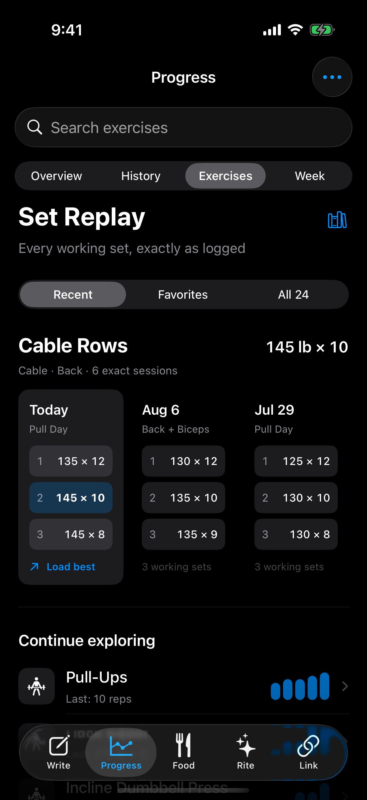

A · Set Replay
Compare the exact working sets from recent sessions side by side. The set—not a chart—is the primary visual object.

SwiftUI: snapping horizontal ScrollView, segmented Picker, semantic surfaces, monospaced exact values, native search and tab bar.